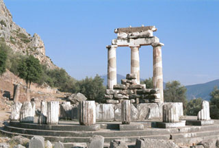

- Search
- Satellite
- Evidence
- Discussion
- References

The Sanctuary of Apollo at Delphi
© 2012 Wikipedia.org
The Sanctuary of Apollo is located at the south-western spur of Mount Parnassus in the valley of Phocis, a region of Ancient Greece located at the northern coast of the Gulf of Corinth, some 8km from the modern-day coast at Itea. The sanctuary is a UNESCO World Heritage Site.
Apollo's sacred precinct in Delphi was a panhellenic sanctuary, where every four years, starting in 776 BC athletes from all over the Greek world competed in the Pythian Games, one of the four panhellenic (or stephanitic) games. The victors at Delphi were presented with a laurel crown (stephanos) which was ceremonially cut from a tree by a boy who re-enacted the slaying of the Python. Delphi was set apart from the other games sites because it hosted the mousikos agon, musical competitions. These Pythian Games rank second among the four stephanitic games chronologically and based on importance. These games, though, were different from the games at Olympia in that they were not of such vast importance to the city of Delphi as the games at Olympia were to the area surrounding Olympia. Delphi would have been a renowned city whether or not it hosted these games; it had other attractions that led to it being labeled the "omphalos" (navel) of the earth, in other words, the center of the world.
In the inner hestia ("hearth") of the Temple of Apollo, an eternal flame burned. After the battle of Plataea, the Greek cities extinguished their fires and brought new fire from the hearth of Greece, at Delphi; in the foundation stories of several Greek colonies, the founding colonists were first dedicated at Delphi.
© 2012 Wikipedia.org
Originally, Delphi was the site of an oracle of the earth goddess Gaia. The site was guarded by a monstrous serpent (or dragon, in some accounts) called Pytho. Apollo killed Pytho and forced Gaia to leave Delphi. Thereafter, the temple at Delphi belonged to Apollo's oracle.
Consulting the Oracle. No one knows for certain how the process of consulting the Delphic oracle worked. However, over the years, a traditional account has been widely accepted. According to this description, a visitor who wanted to submit a question to the oracle would first make an appropriate offering and sacrifice a goat. Then a priestess known as the Pythia would take the visitor's question into the inner part of Apollo's temple, which contained the omphalos and a golden statue of Apollo. Seated on a three-legged stool, the priestess would fall into a trance.
After some time, the priestess would start to writhe around and foam at the mouth. In a frenzy, she would begin to voice strange words and sounds. Priests and interpreters would listen carefully and record her words in verse or in prose. The message was then passed on to the visitor who had posed the question. Some modern scholars believe that the priestess did not become delirious but rather sat quietly as she delivered her divine message.
Anyone could approach the oracle, whether king, public official, or private citizen. At first, a person could consult the oracle only once a year, but this restriction was later changed to once a month.
Influence of the Oracle. The ancient Greeks had complete faith in the oracle's words, even though the meaning of the message was often unclear. As the oracle's fame spread, people came from all over the Mediterranean region seeking advice. Numerous well-known figures of history and mythology visited Delphi, including Socrates and Oedipus.
Reading & Bibliography
Biers, W.R. 1996. The Archaeology of Greece: An Introduction (2nd edition). Ithaca NY: Cornell University Press.
Boardman, J. 1999. The Greeks overseas. (3rd edition)rLondon: Thames and Hudson.
Boys-Stones, G., Graziosi, B. and Vasunia, Ph. (eds) 2009. The Oxford Handbook of Hellenic Studies. Oxford: Oxford University Press. [mainly literary, but contains some useful articles on epigraphy and archaeology]
Charbonneaux, J., Martin, R. & Villard, F. (eds) 1972. Classical Greek art, 480-330 BC. London: Thames and Hudson
Charbonneaux, J., Martin, R. & Villard, F. 1971. (eds) Archaic Greek Art, 620-480 BC. London: Thames and Hudson
Franke, W.A. 2005 'Plutarch's Report on the Blue Patina of Bronze Statues at Delphi: A Scientific Explanation'. Journal of the American Institute for Conservation , Vol.44, No.2, pp.103-116
Lawrence, A.W. and Tomlinson, R.A. 1996. Greek Architecture (5th edition). New Haven and London: Yale University Press.
Mee, C. and Spawforth, A. 2001. Oxford Archaeological Guide: Greece. Oxford: OUP.
Neer, R. 2004. 'The Athenian Treasury and the Materials of Politics'. Classical Antiquity, Vol. 23, No.1, pp.66-93.
Osborne, R. 1998. Archaic and Classical Greek Art. Oxford: Oxford University Press.
Pedley, J.G. 1997. Greek art and archaeology Englewood Cliffs, NJ: Prentice-Hall.
Pollitt, J.J. 1986. Art in the Hellenistic Age. Cambridge: CUP.
Pollitt, J.J. 1990. The Art of Ancient Greece: Sources and Documents. Cambridge: Cambridge University Press.
Raaflaub, K. and Van Wees, H. (eds) 2009. A Companion to Archaic Greece (Blackwell Companions to the Ancient World) Oxford and Malden MA: Wiley-Blackwell.
Robertson, M. 1975. A History of Greek Art (2 volumes). Cambridge: Cambridge University Press.
Stansbury-O’Donnell, M.D 2011. Looking at Greek Art. Cambridge: Cambridge University Press.
Stewart, A. 2008. Classical Greece and the Birth of Western Art. Cambridge: Cambridge
University Press.
Whitley, J. 2001. The Archaeology of Ancient Greece. Cambridge: Cambridge University Press.
Woodford, S. 1986. An Introduction to Greek Art. London: Duckworth.